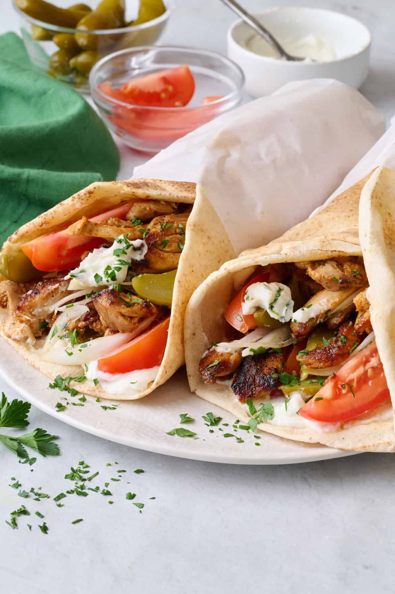

Home
Shawarma

Description
Chicken Shawarma is a Middle Eastern dish made by marinating thin slices of chicken in a flavorful mix of spices
and yogurt, then roasting or grilling them until tender. It's often served in pita bread with garlic sauce,
pickles, and vegetables. Perfectly juicy, spicy, and full of flavor!
Ingredients
- Chicken thighs or breasts
- Greek yogurt
- Garlic
- Lemon juice
- Olive oil
- Cumin
- Paprika
- Turmeric
- Cinnamon
- Salt and pepper
- Pita bread
- Pickles
- Lettuce and tomatoes
- Garlic sauce or tahini
Steps
- Mix yogurt, spices, garlic, and lemon juice to make the marinade.
- Coat the chicken with the marinade and let it rest for a few hours.
- Cook the chicken on a grill or skillet until golden and cooked through.
- Slice the chicken into thin strips.
- Serve in pita bread with pickles, veggies, and garlic sauce.